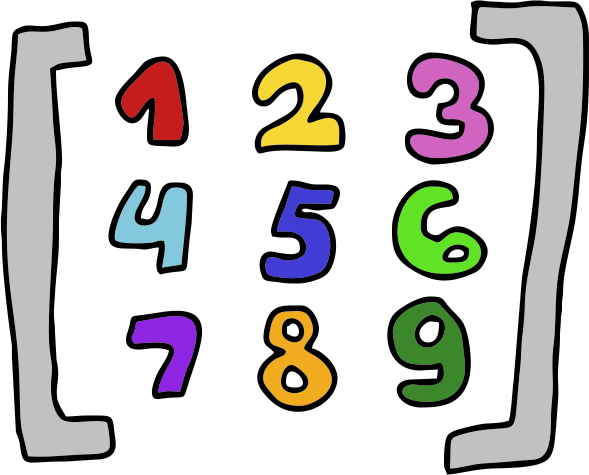
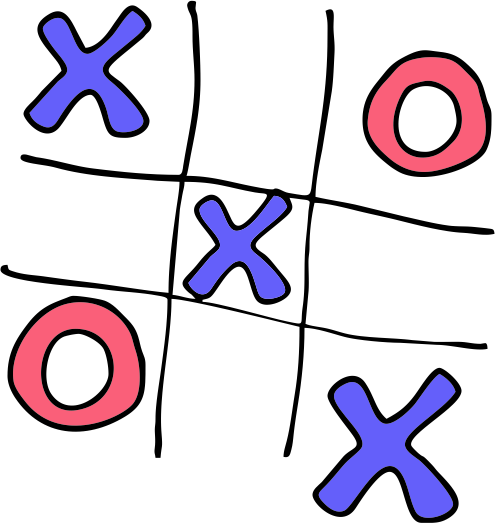
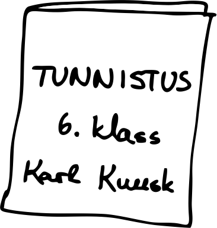

1. Kuidas teha tüübiteisendusi andmestruktuuride vahel?
2. Kuidas andmestruktuure omavahel kombineerida?
3. Kuidas mitmemõõtmelist andmestruktuuri kasutada?
4. Kuidas mitmemõõtmelist andmestruktuuri tsüklis läbida?
Nüüd on meil neli põhilist andmestruktuuri selged, kuid seni kasutasime elementidena põhiliselt algtüüpe. Tegelikult
saame kasutada elementide ja väärtustena ka teisi andmestruktuure. Näiteks saame luua järjendi, mille elemendid on teised järjendid,
hulgad, sõnastikud või ennikud.
Kõigepealt aga võtame veel kokku seni õpitud andmestruktuurid. Allolevas tabelis on toodud järjendite, sõnastike, hulkade ja
ennikute omadused.
Tegevus
Järjend
Sõnastik
Hulk
Ennik
Tühja andmestruktuuri loomine sulgudega
[]
{{'{'}}{{'}'}}
()
Tühja andmestruktuuri loomise ja tüübiteisenduse funktsioon
list()
dict()
set()
tuple()
Elementidega andmestruktuur
['a', 'b']
{{'{'}}'a': 1, 'b': 2{{'}'}}
{{'{'}}'a', 'b'{{'}'}}
('a', 'b')
Elemendi lisamine
järjend.append('c')
sõnastik['c'] = 3
hulk.add('c')
Elemendi kättesaamine
järjend[0]
sõnastik['a']
ennik[0]
Kas on järjestatud?
jah
jah (kuigi varasemates Pythoni versioonides ei olnud)
ei
jah
Kas saab viilutada?
jah
ei
ei
jah
Pikkuse leidmine
len(järjend)
len(sõnastik)
len(hulk)
len(ennik)
Kas on muudetav?
jah
jah
jah
ei
Kas elemendid võivad olla muudetavad?
jah
võtmed ei, väärtused jah
ei
jah
Kas elemendid on unikaalsed?
ei
võtmed jah, väärtused ei
jah
ei
Tüübiteisendused andmestruktuuridega
Me oleme juba omajagu kasutanud algtüüpide tüübiteisendusi, muutnud sõnesid arvudeks ja arve sõnedeks. Me saame ka teatud
andmestruktuure ühest teiseks muuta. All on toodud mõned näited.
Siin sõnastikuks teisendamiste juures näeme juba mitmemõõtmelisi andmestruktuure. Sõnastikuks teisendamisel võib väline andmestruktuur olla
kas hulk, järjend või ennik, aga oluline on, et kõik elemendid oleksid ise omakorda kaheelemendilised andmestruktuurid. Olgu nad siis
järjendid, ennikud või hulgad. Tasub ka tähele panna, et hulga elemendid peavad olema mittemuudetavad, seega hulga elemendid saavad olla ainult
ennikud, teised andmestruktuurid ei sobi. Sama kehtib ka sõnastiku võtmete kohta.
Kuidas koostada ja läbida mitmemõõtmelist järjendit?
Mitmemõõtmeline järjend on selline järjend, mille elemendid on omakorda järjendid. Ja nende sisemiste järjendite elemendid
võivad veel omakorda olla järjendid jne. Allpool on toodud näited erinevate mõõtmetega järjenditest.
Siin lihtsuse mõttes tegeleme põhiliselt kahemõõtmeliste järjenditega. Kui soovime kahemõõtmelisest järjendist elementi
kätte saada, siis saame ikka kasutada indekseid, nagu ka tavaliste järjendite puhul. Kui soovime kätte saada sisemise järjendi elementi, siis võime
kirjutada ka mitu indeksit üksteise järel. Siis kõigepealt võetakse välimisest järjendist sisemine järjend esimese indeksiga ja siis sealt
sisemisest järjendist element teise indeksiga.
[3, 4] 3 2
Maatriksid
Kahemõõtmelist järjendit, mille sisemistes järjendites on kõigis sama palju elemente, nimetatakse ka maatriksiks. Maatriks on
justkui tabel, millel on read ja veerud.

Sellises 3x3 maatriksis saame hoida näiteks mängu trips-traps-trull seisu:
Kahemõõtmelise järjendi läbimine tsüklis
Kahemõõtmelise järjendi läbimiseks on meil vaja kahte tsüklit, üks välimise järjendi läbimiseks ja üks sisemise jaoks.
Kolmemõõtmelise järjendi jaoks oleks meil vaja kolme tsüklit, neljamõõtmelise jaoks nelja jne. Nagu ka järjendid olid üksteise sees, siis on ka
nende läbimiseks mõeldud tsüklid üksteise sees.
Kui soovime lihtsalt kõik sisemiseks elemendid ekraanile väljastada, siis sobib meile tavaline for-tsükkel.
See programm väljastab kõik sisemised elemendid eraldi ridadel:
2 1 5 3 4 6
Saame ka tsüklis indekseid läbida ja nii kõik elemendid kätte saada.
See koodijupp väljastab täpselt sama, mis eelmine. Siin i on välimise järjendi indeks ehk
rea indeks, j on sisemise järjendi indeks ehk veeru indeks.
Indeksitega saame valikuliselt elemente
väljastada. Näiteks võime võtta oma trips-traps-trulli seisu näite ja väljastada sealt diagonaali, mis läheb ülevalt vasakult alla paremale.
Kuidas sellise diagonaali elemendid kätte saada?
Tegelikult on see väga lihtne, sedapidi diagonaali kuuluvad kõik elemendid, kus rea ja veeru indeksid on võrdsed.

See tsükkel väljastab ekraanile kolm korda X.
Erinevate andmestruktuuride kombineerimine
Nagu ka vilksamisi peatüki alguses nägime, siis saame erinevaid andmestruktuure omavahel kombineerida. Näiteks
sõnastiku väärtused võivad olla järjendid, hulgad, ennikud või ka teised sõnastikud. Järjendi ja enniku elemendid võivad samuti olla ükskõik mis
teised andmestruktuurid. Vaid hulkade elemendid peavad olema mittemuudetavad, seega sinna sobivad ainult ennikud.
Vaatame ühte näidet, kus meil on sõnastikku pandud kirja õpilaste hinded. Hindeid hoitakse järjendites. Lisaks
on meil ka ennik, milles on kirjas ained. Esimene hinne igas järjendis vastab esimesele ainele ennikus. Teine hinne on teise aine kohta jne.
Väljastame õpilaste teenitud hinded ekraanile.

Järgmises näites on meil järjend hulkadest. Nendes hulkades on õpilaste lemmikvärvid. Leiame, kas leidub mõni selline värv,
mis on kõigi õpilaste lemmikute seas.
Antud juhul on koodijupi väljund selline:
Harjutused
Trips-traps-trull
Me juba nägime, kuidas trips-traps-trulli mängu seisu saab maatriksiga kujutada. Selles harjutuses kirjutame funktsiooni
võitja, mis leiaks,
kas ja kes on mängu võitnud. Funktsioon peaks argumendiks võtma mängulaua seisu ja tagastama sõnena "X", kui X
võitis mängu, "O" kui O võitis mängu ja "?" kui võitjat ei leidu. Meeldetuletuseks, et selles mängus
võitmiseks peab olema kas reas, veerus või diagonaalis kolm mängija tähist järjest.